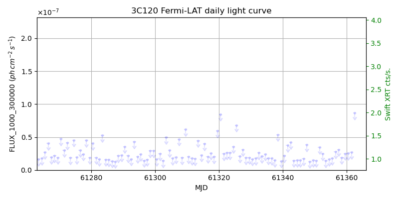
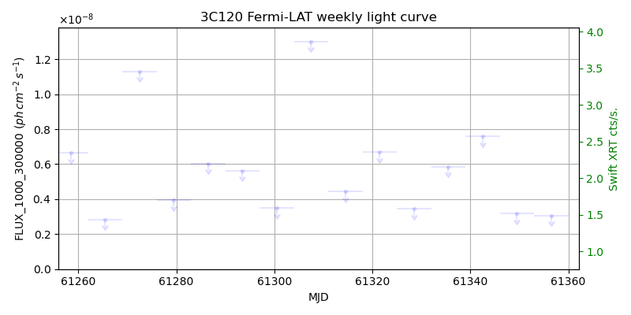

LAT Lightcurve site: https://fermi.gsfc.nasa.gov/ssc/data/access/lat/msl_lc/source/3C_120
Swift site: https://www.swift.psu.edu/monitoring/source.php?source=3C120
NED: Query
Time of last update of this page: UT: 2026-11-28 16:14 (MJD: 61372.677)
| Property | Value |
|---|---|
| R.A. | 4:33:11.04 |
| Dec. | 5:21:14.4 |
| z | 0.033 |
| 3FGL SpectrumType | |
| 3FGL PL Index | -1.00 |
| 3FGL Flux_100_300000 | -1.00e+00 |
| 3FGL Flux_1000_300000 | -1.00e+00 |
| 3FGL Flux >200 GeV | -1.00e+00 |
| 3FGL Extrap. Crab >200 GeV | -1.00 |
| 3FGL Flux After EBL Absorption >200GeV | -1.00e+00 |
| 3FGL EBL Crab Fraction >200GeV | -1.00 |
| MJD | dMJD | Flux | dFlux | Frac3FGL | FracCrab>200GeV | EBLFracCrab>200GeV |
|---|---|---|---|---|---|---|
| 61362.50 | 0.50 | 4.02e-07 | 0.00e+00 | 0.00 | 0.00 | -0.00 |
| 61363.50 | 0.50 | 6.04e-07 | 0.00e+00 | 0.00 | 0.00 | -0.00 |
| 61364.50 | 0.50 | 4.59e-06 | 0.00e+00 | 0.00 | 0.00 | -0.00 |
| 61365.50 | 0.50 | 4.55e-06 | 0.00e+00 | 0.00 | 0.00 | -0.00 |
| 61366.50 | 0.50 | 1.10e-05 | 0.00e+00 | 0.00 | 0.00 | -0.00 |

| MJD | dMJD | Flux | dFlux | Frac3FGL | FracCrab>200GeV | EBLFracCrab>200GeV |
|---|---|---|---|---|---|---|
| 61335.50 | 3.50 | 9.06e-08 | 0.00e+00 | 0.00 | 0.00 | -0.00 |
| 61342.50 | 3.50 | 9.05e-08 | 0.00e+00 | 0.00 | 0.00 | -0.00 |
| 61349.50 | 3.50 | 1.61e-07 | 0.00e+00 | 0.00 | 0.00 | -0.00 |
| 61356.50 | 3.50 | 2.13e-07 | 0.00e+00 | 0.00 | 0.00 | -0.00 |
| 61363.50 | 3.50 | 2.33e-08 | 0.00e+00 | 0.00 | 0.00 | -0.00 |

| MJD | dMJD | Flux | dFlux | Frac3FGL | FracCrab>200GeV | EBLFracCrab>200GeV |
|---|---|---|---|---|---|---|
| 61362.50 | 0.50 | 8.64e-08 | 0.00e+00 | 0.00 | 0.00 | -0.00 |
| 61363.50 | 0.50 | 2.59e-07 | 0.00e+00 | 0.00 | 0.00 | -0.00 |
| 61364.50 | 0.50 | 3.06e-07 | 0.00e+00 | 0.00 | 0.00 | -0.00 |
| 61365.50 | 0.50 | 1.94e-06 | 0.00e+00 | 0.00 | 0.00 | -0.00 |
| 61366.50 | 0.50 | 1.73e-06 | 0.00e+00 | 0.00 | 0.00 | -0.00 |

| MJD | dMJD | Flux | dFlux | Frac3FGL | FracCrab>200GeV | EBLFracCrab>200GeV |
|---|---|---|---|---|---|---|
| 61335.50 | 3.50 | 5.85e-09 | 0.00e+00 | 0.00 | 0.00 | -0.00 |
| 61342.50 | 3.50 | 7.60e-09 | 0.00e+00 | 0.00 | 0.00 | -0.00 |
| 61349.50 | 3.50 | 3.16e-09 | 0.00e+00 | 0.00 | 0.00 | -0.00 |
| 61356.50 | 3.50 | 3.07e-09 | 0.00e+00 | 0.00 | 0.00 | -0.00 |
| 61363.50 | 3.50 | 1.11e-08 | 0.00e+00 | 0.00 | 0.00 | -0.00 |
--------------------------------------------------------- Using user-supplied coords: 4:33:11.04 5:21:14.4 2000 --------------------------------------------------------- FLWO UT night of: 2026-11-29 Local Sid. @ Midnight: 04:08 Sunset (-15.0) (local, UT): 18:31 01:31 Sunrise (-15.0) (local, UT): 05:53 12:53 Moonrise (local, UT): 21:57 04:57 Moonset (local, UT): Moon phase: 0.72 --------------------------------------------------------- AzTime LSID UT Obj_el Obj_az Mn_el Mn_az Sep. --------------------------------------------------------- 18:31 22:39 01:31 4.0 86.0 -32.9 32.1 62.8 19:01 23:09 02:01 10.3 89.9 -29.4 38.9 63.2 19:31 23:39 02:31 16.7 93.9 -25.4 45.0 63.5 20:01 00:09 03:01 23.0 98.1 -21.0 50.6 63.9 20:31 00:39 03:31 29.3 102.6 -16.2 55.6 64.2 21:01 01:09 04:01 35.5 107.7 -11.1 60.2 64.5 21:31 01:39 04:31 41.5 113.4 -5.4 64.5 64.9 22:01 02:09 05:01 47.2 120.2 0.4 68.5 65.2 22:31 02:39 05:31 52.5 128.4 5.8 72.2 65.5 23:01 03:10 06:01 57.1 138.6 11.6 75.8 65.7 23:31 03:40 06:31 60.8 151.3 17.5 79.4 66.0 00:01 04:10 07:01 63.1 166.4 23.6 82.9 66.3 00:31 04:40 07:31 63.7 183.2 29.7 86.5 66.5 01:01 05:10 08:01 62.4 199.5 35.8 90.3 66.7 01:31 05:40 08:31 59.6 213.8 42.0 94.4 66.9 02:01 06:10 09:01 55.5 225.5 48.1 99.1 67.1 02:31 06:40 09:31 50.5 234.9 54.2 104.7 67.3 03:01 07:10 10:01 45.1 242.5 60.1 111.7 67.5 03:31 07:40 10:31 39.2 248.9 65.6 121.1 67.7 04:01 08:10 11:01 33.2 254.3 70.5 134.7 67.8 04:31 08:40 11:31 27.0 259.1 74.0 154.7 68.0 05:01 09:11 12:01 20.6 263.5 75.2 181.1 68.2 05:31 09:41 12:31 14.3 267.6 73.6 206.8 68.3 05:53 10:02 12:53 9.7 270.5 71.0 221.2 68.5 --------------------------------------------------------- Dark hours >55 deg.: 0.00